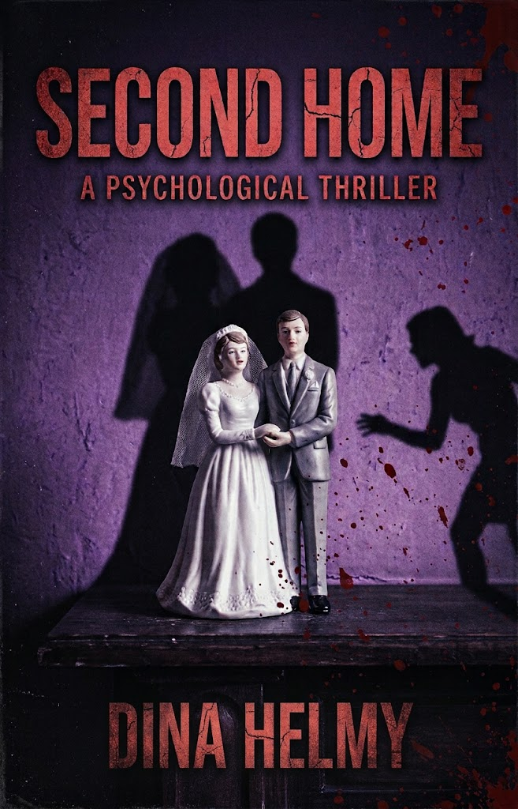

Begin reading- A Tuesday night
- Next to the dryer
- Providence, twice a month
- Twelve years of marriage
- A second phone
- 11:47
By the time you finish reading this, my husband will be dead. And everyone will believe I'm the one who loved him.
Scroll
Begin reading